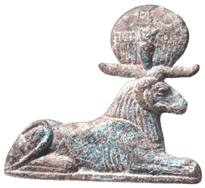
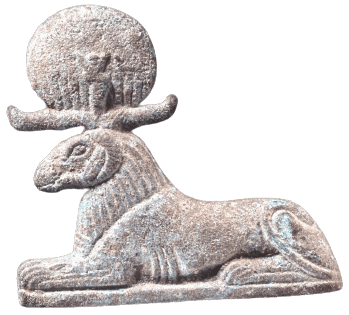

Who Exists At The Beginning


resources
Ancient Egypt Online
Creation on the Potter's Wheel at the Eastern Horizon of Heaven by Peter F. Dorman, published in Gold of Praise: Studies on Ancient Egypt in Honor of Edward F. Wente, pgs. 83-97
Esna by Jochen Hallof for the UCLA Encyclopedia of Egyptology
The Temple of Esna. An Evolving Translation: Esna II | III | IV
modern hymns & devotional writing
Adoration of Khnum by starsandepithets
Hymn to Khnum by godsofsandandwater
Khnum, Who Exists at the Beginning by reina-morada
Works from Cow of Gold 1 |
2 |
3 |
4
Works by hesy-bes (aka mery-set-re) 1 |
2 |
3
Works from deactivated blogs 1 |
2

other e-shrines
credits
 
current offerings from pixelins
most images credited on my mythology graphics page